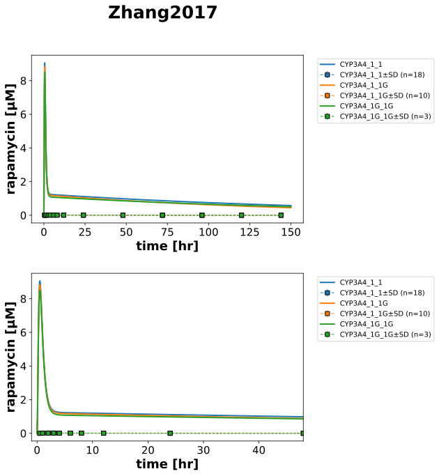
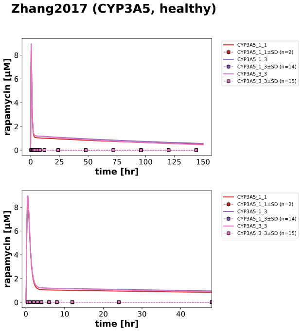

|  |
|  |
../../../../experiments/studies/zhang2017.py
from typing import Dict
from sbmlsim.data import DataSet, load_pkdb_dataframe
from sbmlsim.fit import FitMapping, FitData
from pkdb_models.models.rapamycin.experiments.base_experiment import (
RapamycinSimulationExperiment,
)
from pkdb_models.models.rapamycin.experiments.metadata import (
RapamycinMappingMetaData,
Tissue, Route, Dosing, ApplicationForm, Health, Fasting, Coadministration, Genotype
)
from sbmlsim.plot import Axis, Figure
from sbmlsim.simulation import Timecourse, TimecourseSim
from pkdb_models.models.rapamycin.helpers import run_experiments
class Zhang2017(RapamycinSimulationExperiment):
"""Simulation experiment of Zhang2017.
When *1 is replaced by *1G, the activity of CYP3A4 will increase, and the clearance rate of its substrates.,
In this study, we first demonstrated the relationship between the CYP3A4*1G genetic polymorphism and,
the pharmacokinetics of sirolimus and suggested that the CYP3A4*1G polymorphism is an important parameter that,
affects the pharmacokinetics of sirolimus also CYP3A5*3/*3 (but study can't point the main contributor).
"""
interventions = ["RAP5"]
groups = [
"CYP3A4_1_1",
"CYP3A4_1_1G",
"CYP3A4_1G_1G",
"CYP3A5_1_1",
"CYP3A5_1_3",
"CYP3A5_3_3",
]
colors = {
"CYP3A4_1_1": "tab:blue",
"CYP3A4_1_1G": "tab:orange",
"CYP3A4_1G_1G": "tab:green",
"CYP3A5_1_1": "tab:red",
"CYP3A5_1_3": "tab:purple",
"CYP3A5_3_3": "tab:pink",
}
bodyweights = { # bodyweights
"CYP3A4_1_1": 63.6,
"CYP3A4_1_1G": 64.3,
"CYP3A4_1G_1G": 72.3,
"CYP3A5_1_1": 74.0,
"CYP3A5_1_3": 65.1,
"CYP3A5_3_3": 63.1,
}
f_cyp3a4 = {
# FIXME do we do separate parameter for CYP35A???
"CYP3A4_1_1": 1.0, #unchanged
"CYP3A4_1_1G": 1.3, #main contributor, increase CYP3A4 activity
"CYP3A4_1G_1G": 1.0,
"CYP3A5_1_1": 1.0,
"CYP3A5_1_3": 1.0,
"CYP3A5_3_3": 1.3, #probably contributor, increase CYP3A5 activity
}
def datasets(self) -> Dict[str, DataSet]:
dsets = {}
for fig_id in ["Fig1A", "Fig1B"]:
df = load_pkdb_dataframe(f"{self.sid}_{fig_id}", data_path=self.data_path)
for label, df_label in df.groupby("label"):
dset = DataSet.from_df(df_label, self.ureg)
# unit conversion
if label.startswith("rapamycin_"):
dset.unit_conversion("mean", 1 / self.Mr.rap)
dsets[label] = dset
# console.print(dsets)
# console.print(dsets.keys())
return dsets
def simulations(self) -> Dict[str, TimecourseSim]:
Q_ = self.Q_
tcsims = {}
for group in self.groups:
tcsims[f"rap_RAP5_{group}"] = TimecourseSim(
[Timecourse(
start=0,
end=150 * 60, # [min]
steps=2000,
changes={
**self.default_changes(),
# physiological changes
"BW": Q_(self.bodyweights[group], "kg"),
# dose
"PODOSE_rap": Q_(5, "mg"),
# CYP3A4 activity
"GU__f_cyp3a4": Q_(self.f_cyp3a4[group], "dimensionless"),
"LI__f_cyp3a4": Q_(self.f_cyp3a4[group], "dimensionless"),
},
)]
)
#console.print(tcsims.keys())
return tcsims
def fit_mappings(self) -> Dict[str, FitMapping]:
mappings = {}
for group in self.groups:
genotype_tokens = group.split("_")
genotype = Genotype(f"{genotype_tokens[0]} *{genotype_tokens[1]}/*{genotype_tokens[2]}")
mappings[f"fm_rap_RAP5_{group}"] = FitMapping(
self,
reference=FitData(
self,
dataset=f"rapamycin_RAP5_{group}",
xid="time",
yid="mean",
yid_sd="mean_sd",
count="count",
),
observable=FitData(
self, task=f"task_rap_RAP5_{group}", xid="time", yid="[Cveblood_rap]",
),
metadata=RapamycinMappingMetaData(
tissue=Tissue.BLOOD,
route=Route.PO,
application_form=ApplicationForm.TABLET,
dosing=Dosing.SINGLE,
health=Health.HEALTHY,
fasting=Fasting.FASTED,
coadministration=Coadministration.NONE,
genotype=genotype,
)
)
return mappings
def figures(self) -> Dict[str, Figure]:
figs={}
cyp3a4_groups = ["CYP3A4_1_1", "CYP3A4_1_1G", "CYP3A4_1G_1G"]
cyp3a5_groups = ["CYP3A5_1_1", "CYP3A5_1_3", "CYP3A5_3_3"]
# CYP3A4
fig_cyp3a4 = Figure(
experiment=self,
sid="Fig1_CYP3A4",
name=f"{self.__class__.__name__}",
num_rows=2,
)
plots_cyp3a4 = fig_cyp3a4.create_plots(
xaxis=Axis(self.label_time, unit=self.unit_time),
legend=True
)
for k in range(2):
plots_cyp3a4[k].set_yaxis(self.label_rap, unit=self.unit_rap)
plots_cyp3a4[1].xaxis.min = -1
plots_cyp3a4[1].xaxis.max = 48
for group in cyp3a4_groups:
for k in range(2):
# simulation
plots_cyp3a4[k].add_data(
task=f"task_rap_RAP5_{group}",
xid="time",
yid="[Cveblood_rap]",
label=group,
color=self.colors[group],
)
# data
plots_cyp3a4[k].add_data(
dataset=f"rapamycin_RAP5_{group}",
xid="time",
yid="mean",
yid_sd="mean_sd",
count="count",
label=group,
color=self.colors[group],
)
figs[fig_cyp3a4.sid] = fig_cyp3a4
# CYP3A5
fig_cyp3a5 = Figure(
experiment=self,
sid="Fig1_CYP3A5",
name=f"{self.__class__.__name__} (CYP3A5, healthy)",
num_rows=2,
)
plots_cyp3a5 = fig_cyp3a5.create_plots(
xaxis=Axis(self.label_time, unit=self.unit_time),
legend=True
)
for k in range(2):
plots_cyp3a5[k].set_yaxis(self.label_rap, unit=self.unit_rap)
plots_cyp3a5[1].xaxis.min = -1
plots_cyp3a5[1].xaxis.max = 48
for group in cyp3a5_groups:
for k in range(2):
# simulation
plots_cyp3a5[k].add_data(
task=f"task_rap_RAP5_{group}",
xid="time",
yid="[Cveblood_rap]",
label=group,
color=self.colors[group],
)
# data
plots_cyp3a5[k].add_data(
dataset=f"rapamycin_RAP5_{group}",
xid="time",
yid="mean",
yid_sd="mean_sd",
count="count",
label=group,
color=self.colors[group],
)
figs[fig_cyp3a5.sid] = fig_cyp3a5
return figs
if __name__ == "__main__":
run_experiments(Zhang2017, output_dir=Zhang2017.__name__)
{kind=link}
{kind=link}